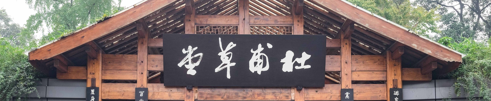
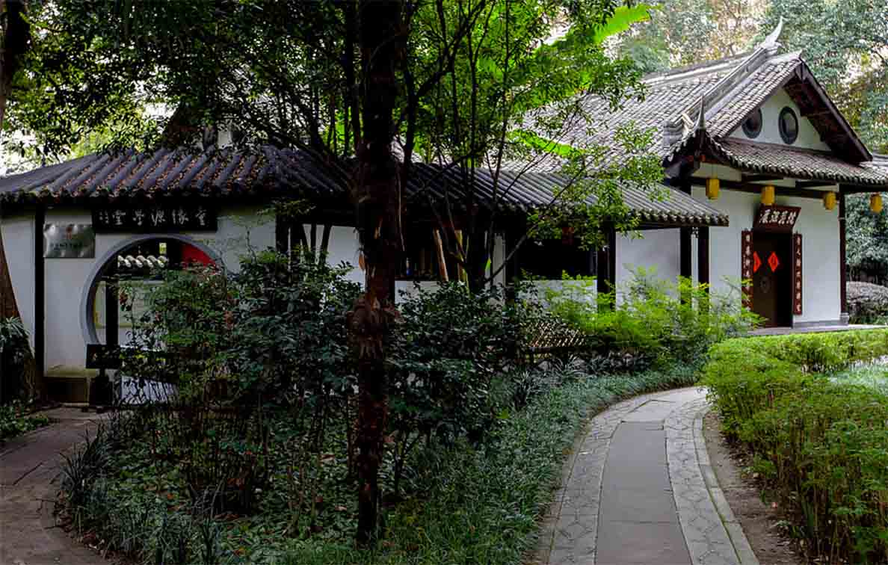
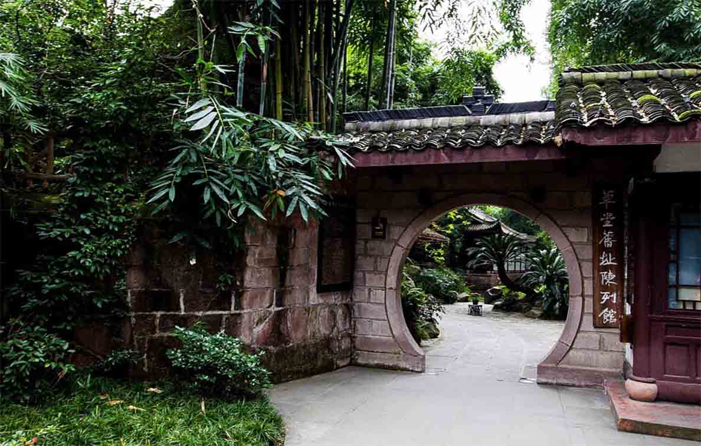
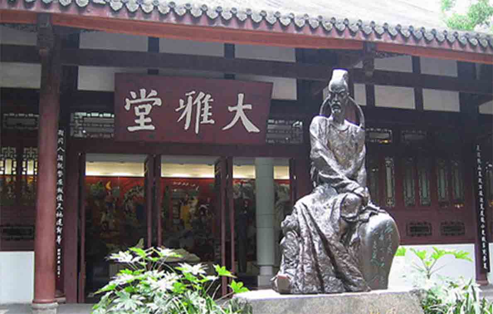

成都杜甫草堂博物馆位于四川省成都市青羊区青华路37号， 是中国唐代大诗人杜甫流寓成都时的故居。 杜甫先后在此居住近四年，创作诗歌240余首。唐末诗人韦庄寻得草堂遗址，重结茅屋，使之得以保存， 宋元明清历代都有修葺扩建。
草堂占地面积近300亩，完整保留着明弘治十三年（公元1500年）和清嘉庆十六年（公元1811年）修葺扩建时的建筑格局， 建筑古朴典雅、园林清幽秀丽， 是中国文学史上的一块圣地。1955年成立杜甫纪念馆， 1985年更名为成都杜甫草堂博物馆。


